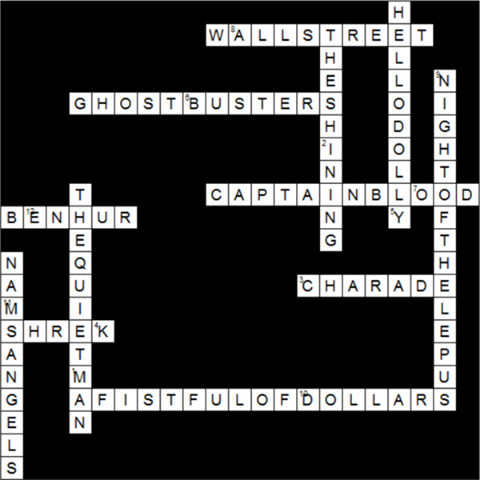

Each of the presented images is a screenshot of a scene from a movie in which another movie is playing (or has just played) in the background.
| MOVIE PICTURED | MOVIE-IN-MOVIE |
|---|---|
| ANY GIVEN SUNDAY | BEN-HUR |
| BACK TO THE FUTURE PART II | A FISTFUL OF DOLLARS |
| BOILER ROOM | WALL STREET |
| E.T. | THE QUIET MAN |
| GOONIES, THE | CAPTAIN BLOOD |
| I AM LEGEND | SHREK |
| MATRIX, THE | NIGHT OF THE LEPUS |
| PRETTY WOMAN | CHARADE |
| PULP FICTION | NAMS ANGELS |
| TWISTER | THE SHINING |
| WALL-E | HELLO DOLLY |
| ZOMBIELAND | GHOSTBUSTERS |
Placing the movies-within-movies into the crossword and reading the numbered squares in order will net another film, MICKYBO AND ME. It is the story of two Irish boys who become obsessed with the film BUTCH CASSIDY AND THE SUNDANCE KID, the answer to this puzzle.
